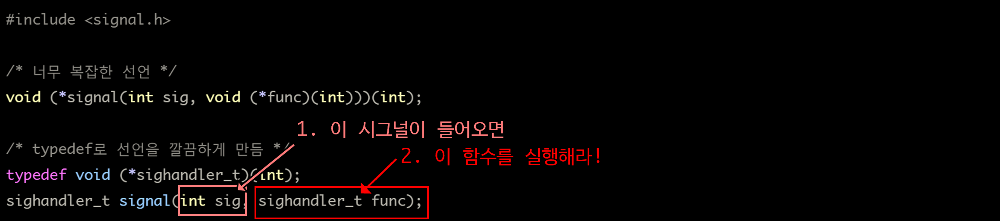
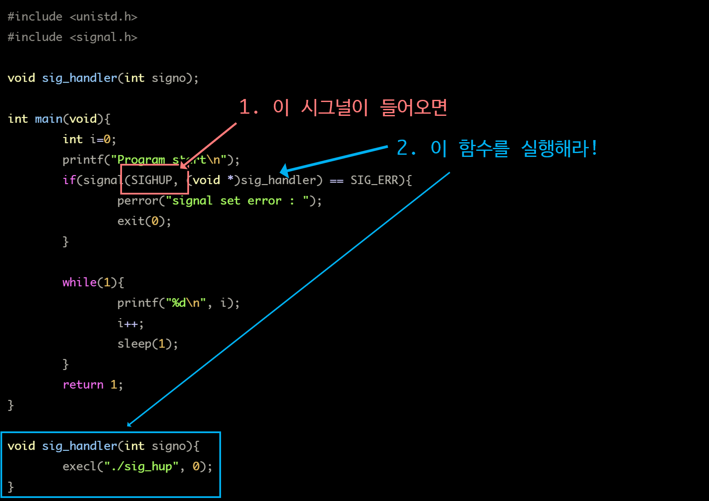
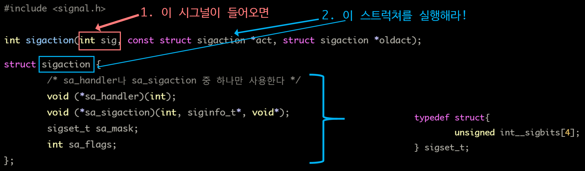
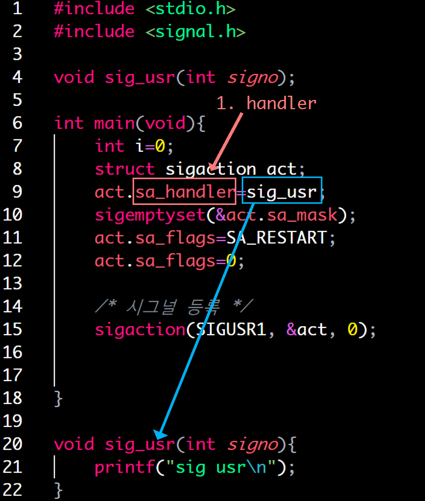
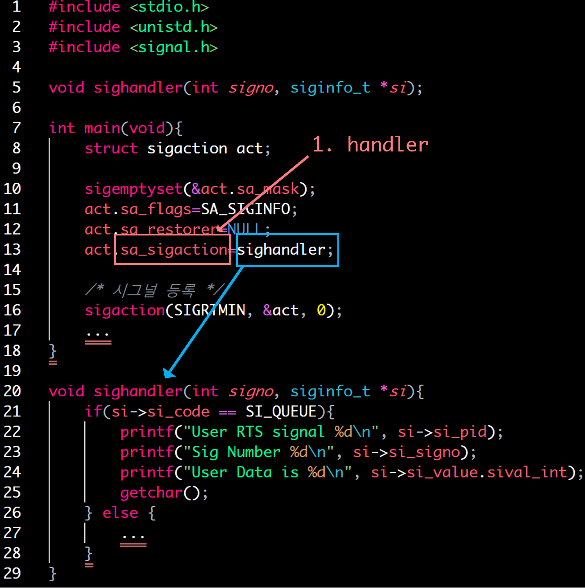
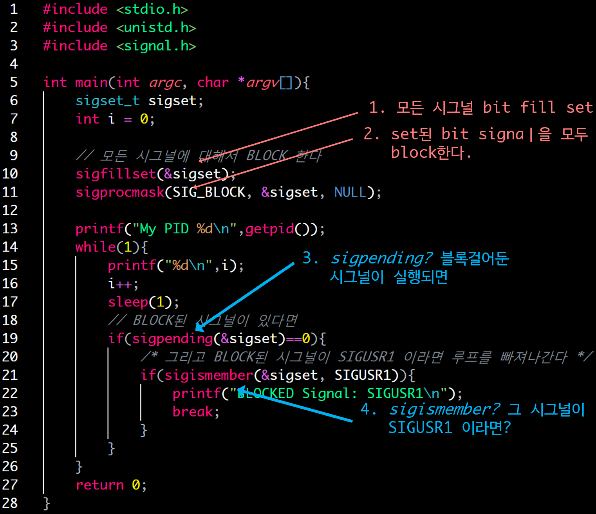
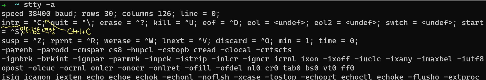
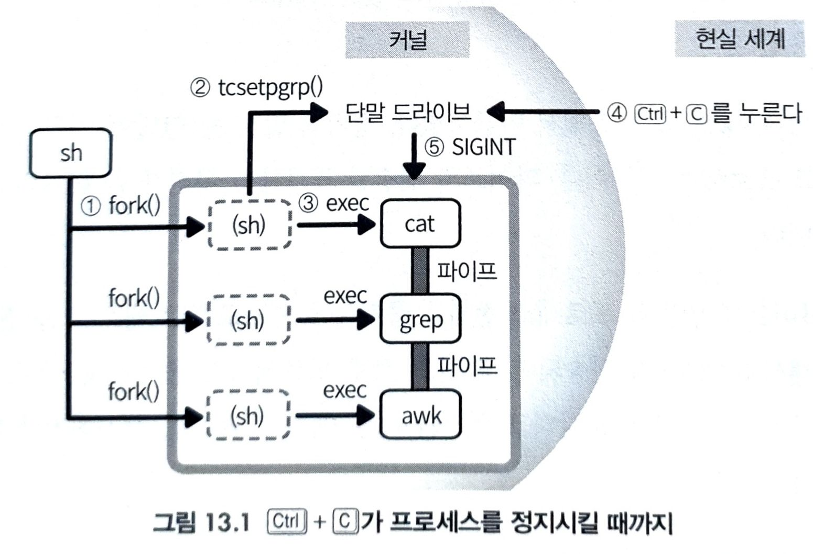

Signal <1> signal(), sigaction(), kill(), 시그널 블록
시그널 특징
- 대기열을 가지지 않는다.
- 프로세스는 동시에 하나의 프로세스 처리
- 비 신뢰성
- 요청에 대한 응답이 전달되었는지 확인하는 쌍방향 통신과는 달리, 시그널은 프로세스에 제대로 전달되었는지 확인 x
자주 사용되는 시그널
| 시그널명 | 포착 가능 | 디폴트 기능 | 생성 원인과 용도 |
|---|---|---|---|
| SIGALARM | O | - | 비동기적인 사건 발생 알림 |
| SIGINT | O | 종료 | 주로 ctrl+c로 생성 프로그램을 종료하고 싶을 때 사용 |
| SIGHUP | O | 종료 | User가 로그아웃할 때 생성됨. 데몬 프로세스에서는 설정 파일을 다시 읽어들이는 경우에 많이 사용 |
| SIGPIPE | O | 종료 | 끊어진 파이프에 데이터를 쓰려고 시도하면 생성된다. |
| SIGTERM | O | 종료 | 프로세스를 종료 kill 명령어를 시그널지정 없이 사용할 때 전달됨 |
| SIGKILL | X | 종료 | 프로세스 종료 |
| SIGCHLD | O | 무시 | 자식 프로세스가 정지 또는 종료 시 발생됨 |
| SIGSEGV | O | 코어 덤프 | 금지된 메모리 영역 액세스, 초기화 하지 않은 포인터, 버퍼 오버 플로우 등.. |
| SIGBUS | O | 코어덤프 | Alignment 위반, 포인터 작업을 잘못한 경우 등 |
| SIGFPE | O | 코어 덤프 | 산술 연산 에러 Div zero, floating point overflow 등.. |
- 시그널 번호
$ kill -l
1) SIGHUP 2) SIGINT 3) SIGQUIT 4) SIGILL
5) SIGTRAP 6) SIGABRT 7) SIGBUS 8) SIGFPE
9) SIGKILL 10) SIGUSR1 11) SIGSEGV 12) SIGUSR2
13) SIGPIPE 14) SIGALRM 15) SIGTERM 16) SIGSTKFLT
17) SIGCHLD 18) SIGCONT 19) SIGSTOP 20) SIGTSTP
21) SIGTTIN 22) SIGTTOU 23) SIGURG 24) SIGXCPU
25) SIGXFSZ 26) SIGVTALRM 27) SIGPROF 28) SIGWINCH
29) SIGIO 30) SIGPWR 31) SIGSYS 34) SIGRTMIN
35) SIGRTMIN+1 36) SIGRTMIN+2 37) SIGRTMIN+3 38) SIGRTMIN+4
39) SIGRTMIN+5 40) SIGRTMIN+6 41) SIGRTMIN+7 42) SIGRTMIN+8
43) SIGRTMIN+9 44) SIGRTMIN+10 45) SIGRTMIN+11 46) SIGRTMIN+12
47) SIGRTMIN+13 48) SIGRTMIN+14 49) SIGRTMIN+15 50) SIGRTMAX-14
51) SIGRTMAX-13 52) SIGRTMAX-12 53) SIGRTMAX-11 54) SIGRTMAX-10
55) SIGRTMAX-9 56) SIGRTMAX-8 57) SIGRTMAX-7 58) SIGRTMAX-6
59) SIGRTMAX-5 60) SIGRTMAX-4 61) SIGRTMAX-3 62) SIGRTMAX-2
63) SIGRTMAX-1 64) SIGRTMAX
쉘에서 시그널 보내기
- kill: sig_kill시그널을 보내는게 아님!
$ kill -[SIGNAL | SIGNO] [PID]
$ kill -SIGKILL 100 # pid 100번 프로세스에 프로세스를 죽이는 시그널 보냄
$ kill -9 100 # pid 100번 프로세스에 프로세스를 죽이는 시그널 보냄
시그널 short cut
| short cut | SIGNAL | Description |
| Ctrl+C | SIGINT | 프로세스를 종료하는 시그널 전송 |
| Ctrl+Z | SIGSTP | 프로세스를 중단하는 시그널 전송 |
| Ctrl+\ | SIGQUIT | core dump를 남기고 프로세스 종료하는 시그널 전송 |
시그널 포착
- 시그널을 받은 프로세스는 어떻게 되는가?
- 따로 핸들러를 설정하지 않았다면, 디폴트 기능 수행
- 포착 가능한 시그널은 트랩하자!
- 포착: 트랩(trap), 캐치(catch)
- 포착 가능: 위 표에서 포착 가능하면, 그 시그널은 시그널이 전달될 때의 동작을 변경할 수 있다.
- SIGCHLD는 디폴트로 무시되지만, 포착 가능 하므로 siganl(), sigaction()을 사용하여 수신 시 동작을 변경 가능
signal():2
주의! 시그널을 보내는게 아닌 트랩(포착)하는 API임!

- 시그널 번호 sig인 시그널을 받았을 때, 디폴트 동작할 것을 지정한 함수로 동작하게 한다.
- 지정한 함수를 시그널 핸들러라 칭함
- 함수를 넣어 시그널 핸들러로 사용케 하거나, 아래의 몇 매크로를 넣어 사용할 수도 있다.
| func 사용할 수 있는 매크로 | 의미 |
|---|---|
| SIG_DFL | 디폴트 동작 수행해라 |
| SIG_IGN | 이 시그널은 무시해라 |
| return | value |
|---|---|
| 성공 | 이전까지 사용되었던 시그널 핸들러 값 |
| 실패 | SIG_ERR errno set에 원인 |
- SIG_DFL은 왜 필요할까?
- 최초 시그널을 모시했는데, 중간에 시그널을 기본행동으로 해야할 필요가 있을 때
- 자식 프로세스를 생성했을 때
- fork()사용 시, 자식 프로세스는 부모의 시그널 정책을 그대로 복사
- 그래서 자식이 시그널 정책을 바꿀 필요가 있을 때!!
signal 예제: SIGHUP 구현
- SIGHUP를 해당 pid에 주면, 해당 pid로 프로세스가 다시 시작되는 것을 볼 수 있다.
- 보통 대몬 프로세스의 설정을 마친 다음에 설정 내용 재 적용 시켜주기 위해서 자주 사용한다.
- SIGHUP 시그널을 받으면, 프로세스를 해당 지점에서 종료하고, execl계열 시스템 콜 함수를 이용해서 프로세스를 다시 실행시킨다.

- 위 프로그램 빌드 후, 실행 시키고 kill 명령을 이용해서 SIGHUP를 발생시켜보자.
$ ps -aux | grep sig_hup
root 4209 .... ./sig_hup
$ kill -9 4209
# ./sig_hup 재 실행됨
$ kill -9 4209
# ./sig_hup 재 실행되지 않음
- 문제점: execl계열 함수를 이용하여 새로운 프로세스를 실행시킬 경우, 기존 프로세스의 자원 중 몇 가지가 새로운 프로세스로 전달된다.
signal의 경우는 새로운 프로세스로 현재 상태가 전달되므로 시그널이 블럭 상태로 넘어가게된다.
- 즉, 시그널 콜은 프로세스 상태도 넘기므로(*이건 넘기면 안됨) 문제가되는 것
- 핸들러가 종료되지 않아서 시그널이 블럭된 상태라도, 블럭 해제되고 코드는 문제 없이 작동한다.
signal():2의 문제점
- 프로세스의 상태 고려 X
프로세스 상태를 고려하지 않고 언제라도 날라와 문제를 이르킴 - 핸들러 초기화
OS에 따라서 지정한 시그널 핸들러를 수행 후, 원래 디폴트로 돌리는경우가 있다.
그러면 한번 시그널 트랩 후, 다시 핸들러를 등록하거나 핸들러 동작 못한다. - 시스템 콜 수행 중에 시그널
read()나 write() 시스템 콜을 수행 중에 시그널이 날라오면, 시스템 콜 수행을 보장할 수 없다. - 중복 호출해서 안되는 함수를 중복 호출
어떤 함수를 실행 중 시그널 핸들러에 의해 해당 함수가 다시 호출될 수 있다.
함수 내에서 전역 변수를 사용하고 있다면 의도치 않은 문제를 이르킬 수 있다.
C 표준 라이브러리에 이러한 함수가 많다. - 시그널 블록
시그널 핸들러가 실행 중 또 시그널 핸들러가 발동되어 복수로 실행될 수 있다.
시스템에서는 이를 막고자 시그널 핸들러가 실행 중일 경우 같은 종류 시그널을 블록한다.
하지만 signal()에서는 블록 설정이 없다.
sigaction
sigaction ()
- (sa_handler)나 (sa_sigaction) 중 하나를 시그널 핸들러로 사용하면 된다.
- sigaction은 시그널을 객체로 다룰 수 있다.
- 시그널 set
- 시그널에 대한 정책
- 시그널 함수
- struct sigaction을 이용해서 시그널 객체요소를 다룬다.
#include <signal.h>
int sigaction(int sig, const struct sigaction *act, struct sigaction *oldact);
| return | value |
| 성공 | 0 |
| 실패 | -1, errno set |
| parameter | Description |
| sig | 어떤 시그널이 들어왔을 때 트랩시킬 것인가? |
| *act | 시그널 핸들러 지정 SIG_DFL*: 해당 시그널의 디폴트 동작 수행해라 SIG_IGN: 이 시그널이 들어오면 그냥 무시해라 *sigaction struct 포인터: 지정한 포인터로 핸들러 실행 |
| *oldact | sigaction()를 호출할 때 설정되어 있던 시그널 핸들러 기재된다. 불필요시 NULL 지정 |
sigaction 구조체
struct sigaction {
/* sa_handler나 sa_sigaction 중 하나만 사용한다 */
void (*sa_handler)(int);
void (*sa_sigaction)(int, siginfo_t*, void*);
sigset_t sa_mask;
int sa_flags;
};
| struct sigaction 멤버 | Description |
| *sa_handler | SIG_DFL, SIG_IGN, 시그널 핸들링 함수 포인터 (이 함수는 아규먼트로 시그널 번호를 받는다.) *sa_handler나 *sa_sigaction 중 하나만 사용 |
| *sa_sigaction | 기능이 더 많은 시그널 핸들링 함수 포인터 siginfo_t* 기능 등을 추가해서 더 자세한 정보를 얻을 수 있다.. man 2 sigaction page를 참고하자. |
| sigset_t sa_mask | 시그널 핸들러의 실행동안 블록되어야하는 시그널의 마스크를 지정한다. 트리거되는 핸들러는 SA_NODEFER 플래그가 사용되지 않으면, 블록될 것이다. |
| sa_flags | SA_SIGINFO: sa_sigaction(siginfo_t*) 인자로 info 정보를 보낸다. SA_RESTART: 시스템 콜 재기동 |
- signal에 비해 다른점
- 핸들러 유지
- sigaction()은 OS와 관련 없이 한번 설정한 시그널 핸들러가 계속 유지된다.
- 시스템 콜의 재기동
- sa_flags 멤버에 플래그 SA_RESTART을 추가하면 시스템 콜을 재기동한다.
일반적으로 재기동하는 것이 편하다.
- sa_flags 멤버에 플래그 SA_RESTART을 추가하면 시스템 콜을 재기동한다.
- 시그널 블록
- sigset_t sa_mask에 블록할 시그널을 지정할 수 있다.
그러나 시그널 핸들러를 수행할 때는 처리 중인 시그널이 자동으로 블록되므로 대부분 이 멤버는 비워두면 된다.
비우기 위해서는 후술할 sigset_t API인 sigemptyset()을 사용하면 된다.
- sigset_t sa_mask에 블록할 시그널을 지정할 수 있다.
- 핸들러 유지
sigaction 예제
- 1. sigaction 사용 예제 
- 1-1. sigaction + sa_handler 사용

- 1-2. sa_sigaction (int ,siginfo_t* ,void *) 사용

sigset_t API
nclude <signal.h>
int sigemptyset(sigset_t *set); "set을 빈 값으로 초기화한다."
int sigfillset(sigset_t *set); "set을 모든 시그널을 포함하는 상태로 한다."
int sigaddset(sigset_t *set, int sig); "set에 시그널(sig)을 추가한다."
int sigdelset(sigset_t *set, int sig); "set에 시그널(sig)를 제거한다."
int sigismember(const sigset_t *set, int sig); "set에 시그널(sig)가 포함되어 있으면 참 반환"
| 함수명 | parameter | Description |
| sigemptyset | sigset_t *set | *set을 빈 값으로 초기화한다. ex) sigemptyset(&act.sa_mask) |
| sigfillset | sigset_t *set | *set bit flag를 on한다. ex) 모든 시그널을 SIG_BLOCK하길 원한다면, 아래와 같이한다. sigset_t sigset, oldset; sigfillset (&sigset); sigprocmask(SIG_BLOCK, &sigset, &oldset); |
| sigaddset | sigset_t *set int signum |
signum번호를 가지는 시그널을 set에 추가한다. |
| sigdelset | sigset_t *set int signum |
signum번호를 가지는 시그널을 set에서 지운다. |
| sigmember | const sigset_t *set int signum |
signum이 시그널 set에 포함되어 있는지 확인한다. ★★★sigpending과 함께 사용되면, 어떤 시그널에 대해서 블록되었는지를 알고 이에 대한 처리를 할 수 있다.★★★ |
시그널 블록
- 시그널 블록은 struct sigaction의 sa_mask 멤버를 사용하여 설정할 수 있다.
#include <signal.h>
int sigprocmask(int how, const sigset_t *set, sigset_t *oldset);
int sigpending(sigset_t *set);
int sigsuspend(const sigset_t *mask);
| 함수명 | parameter | 비고 |
| sigprocmask | int how const sigset_t *set sigset_t *oldset |
시그널 마스크를 검사/변경 how값 SIG_BLOCK: set에 포함되는 시그널을 시그널 마스크에 추가한다. SIG_UNBLOCK: set에 포함되는 시그널을 시그널 마스크에서 삭제한다. SIG_SETMASK: 시그널 마스크를 set으로 대체한다. |
| sigpending | sigset_t *set | 시그널이 블록된 상태에서 어떤 시그널이 발생해서 블록되었는지 알 수 있다. |
| sigsuspend | const sigset_t *mask | 해당 신호가 발생할 때 까지 프로세스를 중지 |
시그널 블록 예제 1. 블록된 시그널 검출
- 블록된 시그널을 검출

==== # shell 1 =====
$ ./sig_block
My PID 5389
0
1
2
...
121
122
==== # shell 2 =====
$ kill -SIGUSR1 5389
==== # shell 1 =====
BLOCKED Signal: SIGUSR1
시그널 블록 예제 2.
#include <signal.h>
#include <unistd.h>
#include <string.h>
#include <stdio.h>
void sig_int(int signo);
void sig_usr(int signo);
int main(){
int i=0;
struct sigaction intsig, usrsig;
printf("PID : %d\n", getpid());
/* ====== SIGUSR2 시그널 처리 ======*/
usrsig.sa_handler=sig_usr; // 시그널 핸들러 등록
sigemptyset(&usrsig.sa_mask); // 시그널 마스크 초기화
usrsig.sa_flags=0;
if(sigaction(SIGUSR2, &usrsig, 0) == -1){
printf("signal(SIGUSR2 error");
return -1;
}
/* ============================== */
/* ====== SIGINT (CTRL+C) 시그널 처리 ======*/
usrsig.sa_handler=sig_int; // 시그널 핸들러 등록
sigemptyset(&usrsig.sa_mask); // 시그널 마스크 초기화
usrsig.sa_flags=0;
if(sigaction(SIGINT, &usrsig, 0) == -1){
printf("signal(SIGUSR2 error");
return -1;
}
/* ============================== */
while(1){
printf("%d\n",i);
i++;
sleep(1);
}
return 0;
}
void sig_int(int signo){
sigset_t sigset, oldset;
sigemptyset(&oldset);
// SIGUSR2와 SIGUSR1은 블럭된다
// 이들 시그널은 핸들러가 종료되면 전달된다.
sigemptyset(&sigset);
sigaddset(&sigset, SIGUSR2);
sigaddset(&sigset, SIGUSR1);
if(sigprocmask(SIG_BLOCK, &sigset, &oldset)<0)
printf("sigprocmask %d error\n", signo);
// SIGINT를 UNBLOCK한다.
// 핸들러가 수행 중 이더라도 즉시 전달한다.
sigemptyset(&sigset);
sigaddset(&sigset, SIGINT);
if(sigprocmask(SIG_UNBLOCK, &sigset, &oldset)<0)
printf("sigprocmask %d error \n",signo);
printf("sig_int\n");
sleep(5);
return 0;
}
void sig_usr(int signo){
printf("sig_usr2\n");
}
- SIGUSR1과 SIGUSR2 시그널 블럭 시켰다. 핸들러가 수행되는 5초 동안 이들 시그널이 도착하면, 시그널은 BLOCK된다.
그러다 시그널 핸들러가 종료하면, 전달된다. - SIGINT를 UNBLOCK로 한다. 시그널 핸들러가 수행되는 동안 동일한 시그널이 발생하면! 시그널은 BLOCK된다.
SIGINT에 대해서 UNBLOCK을 했으므로 SIGINT가 도착하게 되면, 곧바로 시그널 전달되고, sig_int 시그널 핸들러가 수행 - 이 코드를 주석 처리한 다음에 SIGINT를 여러번 발생 시켜보면서 검사
SIGHUP 문제 해결
- 위 SIGHUP에서 execl계열 실행이 블록된 상태를 받는 문제를 해결한다.
```c
#include
#include #include
void sig_handler(int signo);
int main(){ int i=0; sigset_t newmask, oldmask;
printf("Program start\n");
if(signal(SIGHUP, (void*)sig_handler) == SIG_ERR){
perror("signal set error ");
exit(0);
}
sigemptyset(&newmask);
sigaddset(&newmask, SIGHUP);
if(sigprocmask(SIG_UNBLOCK, &newmask, &oldmask) < 0){
perror("sigmask error: ");
exit(0);
}
while(1){
printf("%d\n");
i++;
sleep(1);
}
return 1; }
void sig_handler(int signo){ execl(“./sig_hup2”, 0); }
- <span style="color:magenta">***sigemptyset***</span>를 이용해 **newmaskset**을 비운다.
- <span style="color:magenta">***sigaddset***</span>을 이용해 여기에 <span style="color:red">**SIGHUP**</span>추가
- <span style="color:steelblue">***sigprocmask***</span>을 이용해서 **newmaskset**에 포함된 <span style="color:red">**SIGNAL**</span>들에 대해 **블럭 해제**
- **핸들러가 종료되지 않아**서 **시그널이 블럭된 상태**라도, **블럭 해제**되고 **코드는 문제 없이 작동**한다.
## sigwait(): 시그널을 이용한 동기적 시그널 처리
---
```c
#include <signal.h>
int sigwait(const sigset_t *set, int *sig);
- sigwait()는 set에 등록된 시그널이 발생될 때까지 기다린다.
- sigset_t 라는 데이터는 시그널에 대응되는 bit값 설정
- sigaction에서 sigwait설명
시그널 전송
kill():2
#include <sys/types.h>
#include <signal.h>
int kill(pid_t pid, int sig);
- 기능: PID가 pid인 프로세스에게 시그널 sig를 송신한다. 주의! 절때 kill명령을 내리는게 아님
| retrun | value |
| 성공 | 0 |
| 실패 | -1, errno set |
| parameter | Desciption |
|---|---|
| pid | 시그널을 전송할 pid 명시 음수로 지정 시, -pid 인 프로세스 그룹 전체에 시그널 송신 |
| sig | 시그널 번호 |
- killpg(): 프로세스 그룹에 시그널 보냄
시그널 보내는 간단한 예제
#include <stdio.h>
#include <stdlib.h>
#include <signal.h>
#include <sys/types.h>
int main(int argc, char *argv[]){
int pid;
int sig_num;
if(argc!=3){
printf("usage %s [pid] [signum]\n", argv[0]);
return 1;
}
pid=atoi(argv[1]);
sig_num=atoi(argv[2]);
if(!kill(pid, sig_num)){
perror("Signal send error\n");
return 1;
}
return 0;
Ctrl + C
- Ctrl + C가 시그널로 변환되어 프로세스에 전달되기 까지 과정
- 사용자가 Ctrl + C 누르면, 이것을 단말 드라이브가 파악
- 단말 드라이브는 모드에 따라 움직임이 다르다.
- 셸 사용: cooked 모드로 특수한 기능을 하는 키가 존재한다.
stty -a명령을 쳐본다.

인터럽트: ^C 중지: ^Z 등이 지정
- 셸 사용: cooked 모드로 특수한 기능을 하는 키가 존재한다.
- 단말 드라이브는 모드에 따라 움직임이 다르다.
- SIGINT를 단말에서 동작 중인 프로세스에 전송
- 셸이 단말에게 너가 관리하는 프로세스는 이것 이것이다라고 가르쳐 줌
- tcsetpgrp() API사용, ioctl()이 사용됨
- 단말은 파이프로 연결된 프로세스 그룹 전체에 신호를 전송한다.
- SIGINT가 전송되면, 파이프 전체 프로세스가 종료된다.
- 물론 프로세스가 sigaction() 등으로 SIGINT를 시그널 핸들러 등록하고 있으면, 설정한 대로 동작한다.

- 셸이 파이프를 구성하는 프로세스 fork()
- 셸이 파이프의 프로세스 그룹 ID를 tcsetpgrp()로 단말에 통지한다.
- fork된 각 프로세스가 각각의 명령어를 exec한다.
- 사용자가 Ctrl+C로 인터럽트 건다.
- 커널 내의 단말 드라이브가 그것을 SIGINT로 변환해 동작 중인 프로세스 그룹에 전송
- 프로세스 그룹이 시그널에 대한 기본 동작으로 종료된다.